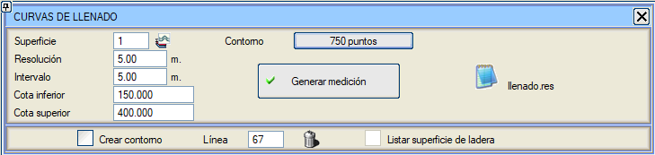
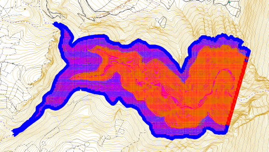

| |
|
HACİM-ALAN EĞRİLERİ
|
| Bu yardımcı program, kullanıcı tarafından belirtilen bir kot aralığına göre elde edilen bir hacmin ölçümünü gerçekleştirir. 
Aşağıdaki verileri gerektirir:

Ölçüm listesinde ([llenado.res Listele] butonuna basıldığında gösterilir) ayrıca her seviyenin alanını içeren bir sütun ve çevre içeren başka bir sütun da bulunur. =================================================== * * * HACİM-ALAN EĞRİSİ * * * =================================================== KOT HACİM ALAN ÇEVRE ---------- ---------------- ---------------- ---------------- 180.000 1341.1 440.7 101.2 185.000 8756.7 2070.9 299.8 190.000 28426.6 5405.0 544.5 195.000 66321.3 9194.4 672.4 200.000 126618.4 14383.5 847.1 205.000 214271.0 19727.8 994.8 210.000 328196.0 25512.6 1157.5 215.000 471723.9 31988.2 1232.8 220.000 652598.1 39503.8 1396.0 225.000 873154.8 48410.2 1614.0 230.000 1135914.3 56036.4 1636.9 235.000 1436306.5 63910.7 1697.7 240.000 1777626.6 72367.7 1823.2 Kontur Oluştur seçeneği etkinleştirildiğinde, kontur çizgisi oluşturulur ve tabandan her kot aralığına kadar olan yamaç yüzey alanını ölçme ve listeleme imkanı açılır. |